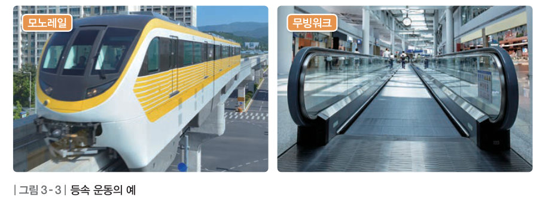
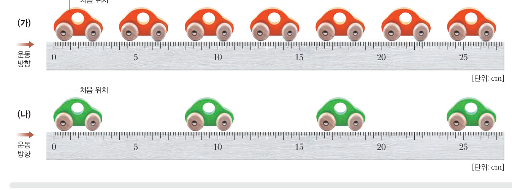
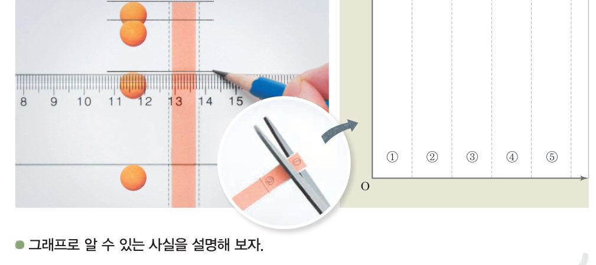

교과서의 연속 사진 대신 초음파 센서가 0.05 초마다 거리를 재요. 수평면을 달리는 태엽 자동차와 빗면을 내려가는 수레의 시간-거리, 시간-속력 그래프를 한 화면에 그려 등속 운동과 속력이 일정하게 빨라지는 운동을 비교하자.
준비물 아두이노 UNO, USB 케이블, 초음파 센서(HC-SR04), 점퍼선, 태엽(또는 건전지) 장난감 자동차, 바퀴 달린 수레, 긴 판(빗면용, 1 m 이상), 책 몇 권, 두꺼운 종이(반사판 10 cm × 10 cm), 테이프, 줄자, 노트북(크롬)


| 기록 | 처음 속력(cm/s) | 나중 속력(cm/s) | 1 초당 속력 변화(cm/s) |
|---|---|---|---|
| ① 수평면 자동차 | |||
| ② 빗면 수레 |
| 평가 항목 | 스스로 평가 |
|---|---|
| 초음파 센서를 바르게 설치하고 두 운동을 기록했다. | |
| 시간-이동 거리, 시간-속력 그래프로 두 운동을 비교해 설명했다. | |
| 모둠원과 역할을 나누어 협력했다. |